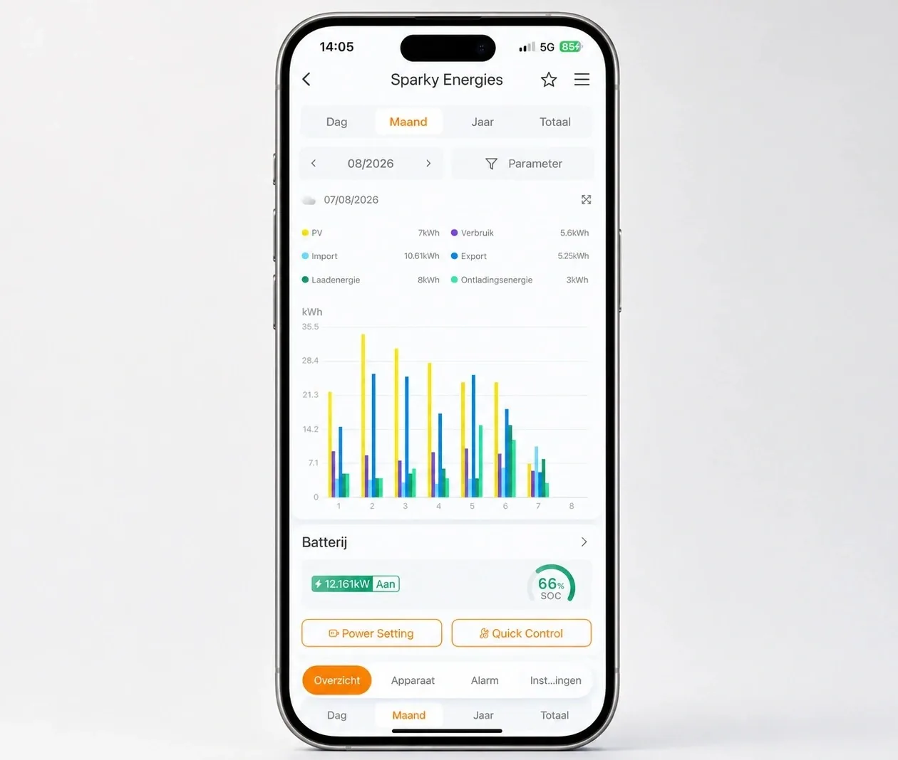
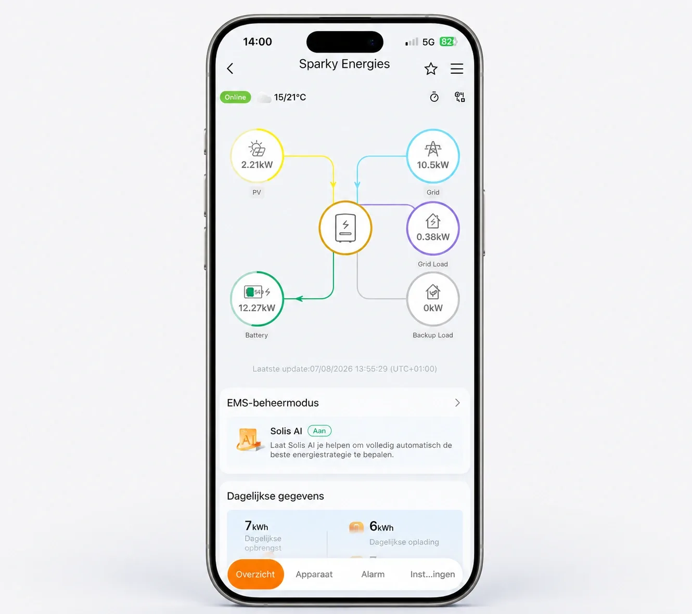
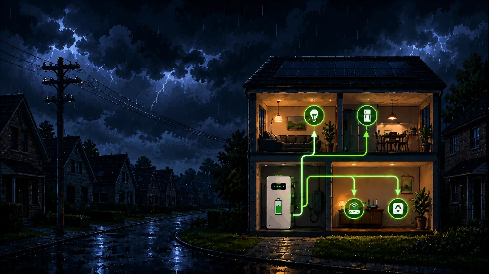

Thuisbatterij installeren in Zeeland? Als uw zonnepanelen overdag stroom terugleveren terwijl u die juist 's avonds nodig heeft, kan een thuisbatterij helpen. Sparky Energies adviseert en installeert bij woningen in Zeeland. We bekijken samen hoeveel zonnestroom u kunt bewaren en of dat past bij uw verbruik, woning en wens om op uw energierekening te besparen.
Normen en merken waarmee wij werken
Solis
Meer uit uw zonnepanelen in Zeeland halen
Uw panelen leveren stroom zodra de zon schijnt. Uw huishouden heeft die stroom misschien pas later nodig. Met passende opslag kunt u een deel van dat verschil opvangen.
Zonnestroom voor de avond
Bewaar een deel van uw opbrengst voor wanneer u thuiskomt, gaat koken of de verlichting aanzet.
Laden op een passend moment
Met geschikte aansturing kan de batterij rekening houden met uw stroomprijzen. We bespreken wat uw energiecontract daarvoor toelaat.
Minder terugleveren overdag
Stroom die u opslaat en later zelf gebruikt, hoeft u op dat latere moment niet van het net af te nemen.
Back-up als extra wens
Wilt u bij stroomuitval enkele apparaten blijven gebruiken? Dan kijken we naar een batterij met een geschikte back-upvoorziening.
Eerst kijken of opslag bij uw woning past
Heeft u in Zeeland zonnepanelen, maar gebruikt u de meeste zonnestroom al direct? Dan kan er weinig overblijven om op te slaan. Ook zonder inzicht in uw teruglevering is een batterij lastig te kiezen. We bekijken daarom eerst uw gegevens en de staat van uw installatie. Soms is apparaten overdag laten draaien een goede eerste stap.
Welke batterijcapaciteit past bij uw Zeeuwse woning?
Pak het jaaroverzicht van uw energieleverancier en de opbrengstgegevens van uw zonnepanelen erbij. Met de keuzehulp krijgt u een eerste opslagindicatie voor uw woning in Zeeland. Die bespreken we daarna samen met de mogelijkheden van uw installatie.
Veel teruglevering, juist 's avonds stroom nodig?
Bent u overdag vaak van huis en gebruikt u vooral na thuiskomst elektriciteit? Dan is het zinvol om te kijken hoeveel zonnestroom nu het net op gaat. Voor uw woning in Zeeland vergelijken we die teruglevering met wat u later op de dag verbruikt.
Daarbij nemen we uw huidige zonnepanelen en omvormer mee. Heeft u ook een elektrische auto of warmtepomp, of denkt u daarover na? Dan bekijken we hoeveel stroom daarvoor nodig is en wat uw aansluiting aankan. Een grotere batterij is niet vanzelf de beste keuze.
Stel: uw zonnepanelen wekken op een middag stroom op, terwijl er thuis weinig aanstaat. Het overschot levert u normaal terug. Een thuisbatterij kan een deel daarvan bewaren voor later op de dag.
Wanneer u 's avonds kookt, televisie kijkt of de vaatwasser aanzet, kan de batterij opgeslagen stroom aan uw woning leveren. Zo gebruikt u een groter deel van wat uw eigen panelen hebben opgewekt.
Bij de installatie in uw woning in Zeeland stellen we de aansturing af op uw gebruik en het gekozen systeem. Het laden en ontladen verloopt daarna automatisch; u hoeft daar niet elke dag mee bezig te zijn.
De batterij heeft wel grenzen: ze kan alleen leveren zolang er voldoende energie is opgeslagen en het gevraagde vermogen binnen haar mogelijkheden blijft. Is dat niet genoeg, dan vult het net aan. Het is opslag voor later gebruik, geen manier om de hele zomeropbrengst tot de winter te bewaren.
Uw energie thuis slim regelen
Aansturing die bij uw huishouden past
Voor uw woning in Zeeland kijken we hoe zonnepanelen, batterij en eventuele grote verbruikers samenwerken. Een energiemanagementsysteem, kortweg EMS, kan het laden en ontladen daarop afstemmen.
Bij sommige systemen helpt AI om verbruikspatronen te herkennen. Heeft u een dynamisch contract? Dan kunnen ook de stroomprijzen worden meegenomen. Welke functies beschikbaar zijn, hangt af van de gekozen apparatuur.
We bespreken de instellingen met u: wilt u vooral eigen zonnestroom gebruiken of ook op wisselende tarieven inspelen? Zo weet u wat het systeem doet en waarom.

Zien waar uw zonnestroom blijft
In de app van het gekozen systeem volgt u bijvoorbeeld hoeveel stroom uw panelen opwekken, hoe vol de batterij is en wanneer ze energie levert. We laten bij de oplevering zien welke gegevens u kunt bekijken.
Dat inzicht helpt ook bij dagelijkse keuzes. Is uw batterij op zonnige dagen al vroeg vol? Dan kan het handig zijn om een wasbeurt naar de middag te verplaatsen. U ziet zo beter hoe opslag en direct verbruik elkaar aanvullen.

Noodstroom vooraf bespreken
Wilt u dat bijvoorbeeld de koelkast, verlichting of internetverbinding bij een stroomstoring blijft werken? Geef dat aan wanneer we uw installatie bespreken. Daarvoor is een geschikte back-upfunctie nodig.
Een thuisbatterij biedt die mogelijkheid niet vanzelf. We controleren welke groepen kunnen worden aangesloten, hoeveel vermogen nodig is en hoelang de opgeslagen energie daarvoor kan volstaan.

Zo plaatsen we uw thuisbatterij in Zeeland
Van een woning in Middelburg of Goes tot een adres in Vlissingen of Terneuzen: we beginnen bij uw zonnepanelen, uw verbruik en de plek waar de batterij kan komen.
U vertelt over uw woning
Geef bij uw aanvraag aan waar in Zeeland u woont en wat u met opslag wilt bereiken. Uw jaaroverzicht en foto's van de meterkast en omvormer helpen ons op weg.
We bekijken wat er mogelijk is
We vergelijken uw opwek, teruglevering en stroomverbruik. Ook beoordelen we de aansluiting en een geschikte plaats in of bij uw woning. Als een beoordeling ter plaatse nodig is, stemmen we die met u af.
U krijgt een voorstel met uitleg
In de offerte staat welke batterij we adviseren, wat we installeren en welke aanpassingen nodig zijn. We lichten de capaciteit en kosten toe, zodat u de keuze rustig kunt beoordelen.
We spreken de installatie met u af
Na uw akkoord plannen we de werkzaamheden bij u thuis. We plaatsen de batterij op de afgesproken plek, verzorgen de aansluiting en controleren of het systeem goed en veilig werkt.
U leert uw batterij kennen
We nemen de werking en instellingen met u door en laten zien hoe u de app gebruikt. Zo kunt u na de oplevering volgen wanneer de batterij stroom opslaat en wanneer u die zelf gebruikt.
Vragen van huiseigenaren in Zeeland
Heeft u al zonnepanelen en denkt u aan opslag? Dit zijn praktische vragen om mee te nemen voordat u een thuisbatterij laat plaatsen.
Kan ik met een thuisbatterij op mijn rekening besparen?
Door opgeslagen zonnestroom zelf te gebruiken, kunt u minder stroom inkopen. Of dat financieel opweegt tegen de aanschaf en installatie, hangt onder meer af van uw teruglevering, energiecontract, gebruik en de kosten van het systeem. Uw eigen verbruik en installatie zijn daarom het uitgangspunt.
Kan de batterij bij mijn bestaande zonnepanelen?
Dat is vaak mogelijk, maar de manier van aansluiten verschilt per installatie. We bekijken het merk en type van uw omvormer, de meterkast en de gewenste batterij. Uw zonnepanelen hoeven dus niet vanzelf vervangen te worden; we leggen uit welke onderdelen kunnen blijven en wat eventueel nodig is.
Kan ik zonnestroom bewaren voor de winter?
Een gewone thuisbatterij is bedoeld om stroom over kortere perioden te verschuiven, bijvoorbeeld van de middag naar de avond. De opslag is te klein om uw zomeropbrengst voor de winter te bewaren. Ook met een batterij blijft uw woning stroom van het net nodig hebben.
Hoe groot moet mijn thuisbatterij zijn?
We kijken hoeveel zonnestroom u overhoudt en hoeveel u verbruikt wanneer uw panelen minder leveren. Het aantal zonnepanelen alleen is onvoldoende. Een batterij die regelmatig grotendeels ongebruikt blijft, kan groter zijn dan u nodig heeft. Uw meetgegevens helpen ons om een passende capaciteit te kiezen.
Waar kan de batterij bij mijn woning komen?
Dat hangt af van het systeem en de beschikbare ruimte. We beoordelen onder meer de temperatuur, ventilatie, bereikbaarheid en afstand tot de elektrische aansluiting. Een garage, berging of buitenopstelling is alleen een optie als die aan de voorschriften van de gekozen batterij voldoet. Ook controleren we of de meterkast moet worden aangepast.
Waar in Zeeland kan ik een thuisbatterij laten installeren?
We installeren bij woningen in Zeeland, van Walcheren en de Bevelanden tot Schouwen-Duiveland, Tholen en Zeeuws-Vlaanderen. U kunt dus ook buiten Middelburg, Vlissingen, Goes of Terneuzen een aanvraag doen. Vermeld uw woonplaats, dan bespreken we de mogelijkheden en planning voor uw adres.
Thuisbatterij voor uw woning in Zeeland?
Wilt u meer van uw eigen zonnestroom gebruiken en weten of opslag bij u past? Laat uw e-mailadres achter. We nemen contact met u op om uw woning in Zeeland, zonnepanelen en energieverbruik te bespreken.